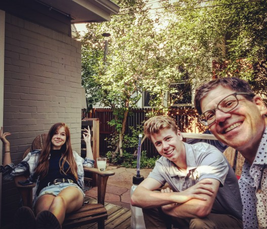

I worked as a developer in C++ and Java doing desktop and backend work for a few years. I took some time off to raise my kids and am now heading back into development.
I was raised in Arlington, VA, next to Washington, DC. Hot, humid, and traffic is a mess.
My daughter and son, Isabel and Ian, attend CU.

Shower Thoughts (taken from online):
- When you close one eye, you see nothing through that eye (not even black). But when you close both eyes, you see black.
- LEGO is one of the only companies that can release an almost infinite number of new products, without actually creating any new products.
- GoFundMe is turning into the internet version of panhandling.
- Someday you will take a picture of yourself - or someone will take one of you - not knowing it will be your memorial picture when you die.
- No one has seen you look worse than the gas station closest to your house.
- When cousins from both sides of the families meet it’s like a special crossover episode in your life.
- The more times a phone number is repeated in an ad, the less trustworthy the ad seems.